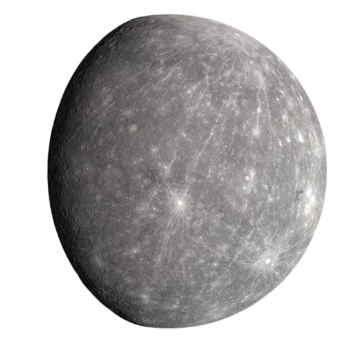
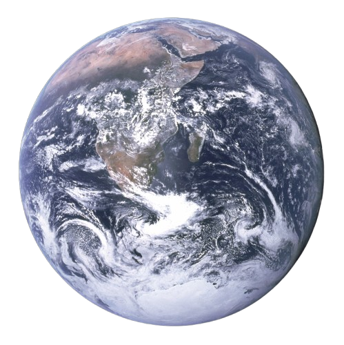
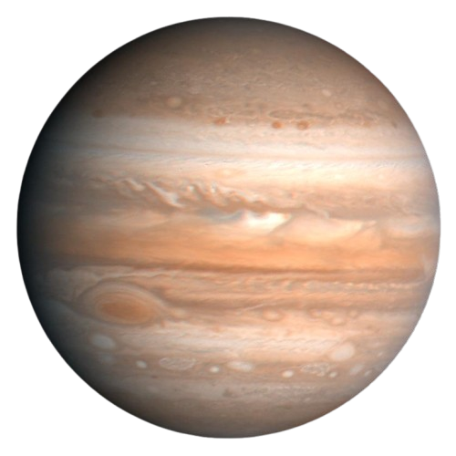

Merkurius
Planet terkecil dan terdekat dengan Matahari.
Mars

Dikenal sebagai 'Planet Merah'.
Bumi
Planet tempat kita tinggal, satu-satunya yang diketahui memiliki kehidupan.
Jupiter
Planet terbesar di tata surya kita.
Bumi (Homepage)

Tampilan lain dari planet kita.